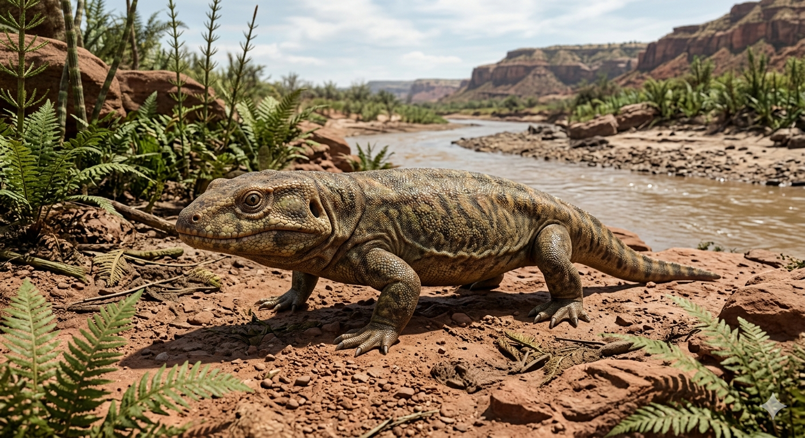

אריופס
The Giant Temnospondyl: Eryops megacephalus

תיק מחקר: נתונים אבולוציוניים
תקופת פעילות
299 עד 278 מיליון שנה
תחילת ועד אמצע תור הפרם
מסה גופנית (משקל)
90 עד 140 קילוגרם
חיה שרירית, כבדה וחסרת חן תנועתי
ממדים (אורך)
1.5 עד 2 מטרים
הגולגולת לבדה הגיעה לאורך של כ-60 ס"מ
מיקום גיאוגרפי
אמריקה הצפונית
ממצאים מושלמים התגלו בטקסס (Red Beds) וניו מקסיקו.
סיווג טקסונומי קריטי
דו-חיים מסדרת הטמנוספונדילים (Temnospondyli)
קבוצה קדומה ונכחדת של דו-חיים בעלי שריון, שהיוו את טורפי-העל במקווי המים.
01 // ניתוח אטימולוגי נרחב
| החלק בשם | שפת מקור | פירוש ומשמעות היסטורית |
|---|---|---|
| Ery- | יוונית (ἐρύειν) | למשוך / להאריך תיאור של המבנה המוארך של הגולגולת שלו אל עבר החרטום. |
| -ops | יוונית (ὤψ) | פנים / עין החלק המשלים ל"פנים ארוכות". |
| Mega- | יוונית (μέγας) | גדול / עצום מתאר את חריגות הממדים של הגולגולת ביחס לגופו. |
| -cephalus | יוונית (κεφαλή) | ראש הלחם מלא של המין: **"בעל הפנים המשוכות והראש העצום"**. השם הוענק ב-1877 על ידי הפלאונטולוג אדוארד דרינקר קופ. הגולגולת הפחוסה תפסה כמעט רבע מהאורך הכולל של החיה. |
02 // נסיבות הגילוי והממצאים: אוצרות הבוץ של טקסס
התגלית של קופ ב-Red Beds (1877)
האריופס התגלה באותו זמן ובאותו אזור שבו התגלה הדימטרודון, במהלך "מלחמות העצמות" של סוף המאה ה-19. אדוארד דרינקר קופ חקר את השכבות האדומות של אגן וויצ'יטה (Wichita Basin) בטקסס, ושם מצא גולגולות עצומות ושטוחות שנראו כמו מכסי ביוב כבדים מאבן.
שלמות המאובנים ושרידות אקולוגית
בניגוד לדו-חיים מודרניים (כמו צפרדעים) ששלדם מתפורר בקלות, לאריופס היו עצמות כבדות במיוחד. מכיוון שהוא חי ומת בתוך בוץ עמוק ששימר את גופתו, הפלאונטולוגים מצאו שלדים שלמים ומחוברים (Articulated), המאפשרים כיום לשחזר את חיבורי שריריו העצומים לעצמות הרגליים העבות.
אקולוגיה וציד: "התנין" של הקדמונים
טורף המארב של הביצות
האריופס פעל ממש כמו תנין מודרני (Ambush Predator). הוא שכב חצי-שקוע במי הביצה, כשעיניו (הממוקמות עליונה) בולטות מעל המים. כשטֶרֶף התקרב, הוא פתח את הלוע, שאב את הטרף פנימה בוואקום וסגר את שיני החיך כמו מלכודת. ללא יכולת ללעוס – הוא בלע הכל בשלמותו.
מבנה גוף של טנק
רגליו הקצרות והעבות היו מופנות הצידה (Sprawling posture). מבנה זה איפשר לו לזחול בבוץ מבלי לשקוע, אך הפך את הליכתו על היבשה לאיטית ומגושמת.
התעלומה: מנגנון ה"פמפום הלועי"
צלעותיו העבות של האריופס היו קשיחות לחלוטין ולא התרחבו כבנשימה רגילה, והייתה חסרה לו סרעפת. איך חיה כזו נשמה?
בעזרת מנגנון **פמפום לועי (Buccal pumping)**. הוא היה פותח את פיו, מוריד את רצפת הגרון כדי לשאוב אוויר, ואז סוגר את הפה ודוחף את האוויר בכוח ישירות אל הריאות בעזרת שרירי הגרון. זה המנגנון הנראה אצל צפרדעים, רק בקנה מידה מפלצתי של שני מטרים.
03 // שרשרת המזון וההיעלמות
בין טורף לנטרף
האריופס היה טורף-העל במים, אך פגיע על היבשה. כנאלץ לנדוד בין שלוליות או להתחמם על הגדה, הוא היה איטי ומגושם, והיווה טרף לגיטימי עבור הטורף הדומיננטי היבשתי – ה**דימטרודון**.
התייבשות והכחדה
לקראת אמצע וסוף תור הפרם, יבשת פנגיאה התייבשה במהירות. כדו-חי, האריופס היה כבול למים לרבייה (הטלת ביצים רכות) וללחות עורו. עם היעלמות הביצות, הוא לא יכול היה להתחרות בזוחלים ובסינאפסידים שהטילו ביצי שפיר אטומות במעבה היבשה הצחיחה, ושושלתו דעכה להכחדה.